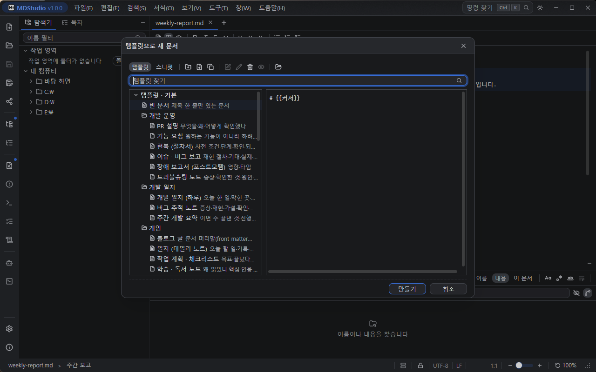

템플릿과 스니펫
템플릿은 새 문서의 틀이고, 스니펫은 커서 자리에 넣는 블록입니다. 이 쪽은 쓰는 방법, 내 템플릿 관리, 토큰 표를 설명합니다.
템플릿으로 새 문서 만들기
- 파일 > 템플릿으로 새 문서(Ctrl+Shift+N)를 클릭합니다.
- 목록에서 템플릿을 선택합니다. 찾기 칸에 입력한 단어가 이름·설명·검색어·그룹에 모두 있는 항목만 남습니다.
- 오른쪽 미리보기(앞 200줄)를 확인하고 [만들기] 버튼을 클릭합니다. 더블클릭해도 됩니다.
창이 닫히고 새 문서 탭이 열립니다. 토큰은 값으로 바뀌고, {{커서}} 자리에 커서가 놓입니다. 템플릿에 사용자 정의 토큰이 있으면 먼저 값을 묻는 창이 뜹니다.

스니펫 넣기
- 편집기에서 넣을 자리에 커서를 둡니다.
- 서식 > 스니펫(Ctrl+Shift+A)을 클릭하고, 목록에서 스니펫을 선택해 [삽입] 버튼을 클릭합니다.
스니펫은 커서 자리에 들어갑니다. 선택한 글이 있으면 그 글을 바꿉니다.
참고: 읽기 전용 문서에는 스니펫을 넣을 수 없습니다.
편집기에서 단어를 입력하고 Ctrl+Space를 누르면 스니펫이 목록에 나옵니다. 부를 단어는 검색어의 첫 영문 단어이고, 없으면 스니펫 이름입니다. 설정의 「자동 완성」에서 「스니펫(이름, Ctrl+Space)」을 끄면 나오지 않습니다.
내 템플릿 만들기
내 템플릿과 스니펫은 설정 폴더의 templates·snippets 폴더에 있는 .md 파일입니다. 기본 템플릿은 고칠 수 없으므로 복제해서 고칩니다.
- 파일 > 템플릿으로 새 문서를 클릭하고, 위쪽 칩으로 「템플릿」 또는 「스니펫」을 선택합니다.
- 도구 줄의 「새 템플릿」을 클릭해 이름을 입력합니다. 폴더가 필요하면 「새 그룹」을 씁니다.
- 새 파일은
# {{커서}}한 줄로 만들어져 선택된 채 남습니다. 도구 줄의 「편집기에서 열어 편집」을 클릭해 탭에서 씁니다.
이름에는 빈 이름, / \ : * ? " < > | 글자, 끝의 마침표를 쓸 수 없습니다. 같은 이름의 파일이 있으면 만들지 않습니다. 분류는 뿌리 바로 아래 폴더 한 겹입니다.
머리 블록
파일 맨 위의 <!-- lumi: … --> 블록은 없어도 됩니다. 목록의 이름, 찾기 검색어, 순서를 정하며, 넣을 때 빠집니다.
| 키 | 뜻 |
|---|---|
name |
목록의 이름. 없으면 파일 이름 |
summary |
설명. 찾기 대상입니다 |
keywords |
찾기 검색어. 스니펫을 부를 단어도 여기서 정합니다 |
saveAs |
템플릿으로 만든 문서를 저장할 때 제안할 이름 |
order |
목록 순서. 작은 수가 위이고, 없으면 맨 뒤입니다 |
내 템플릿 관리하기
항목을 선택하면 그 항목에 쓸 수 있는 명령만 켜집니다.
- 편집기에서 열어 편집: 내 템플릿만 됩니다.
- 내 것으로 복제: 기본 템플릿만 됩니다. 같은 이름이 있으면 복제하지 않습니다.
- 이름 바꾸기(F2): 내 템플릿만 됩니다.
- 삭제(Delete): 내 템플릿은 확인 창에서 [삭제] 버튼을 눌러야 지웁니다. 되돌릴 수 없고, 그룹을 지우면 안의 템플릿도 지웁니다.
- 삭제(기본 템플릿): 파일은 두고 목록에서 숨깁니다. 숨긴 항목은 「숨김」으로 흐리게 보이며 다시 보이기로 되돌립니다. 기본 그룹은 숨길 수 없습니다.
- 도구 줄의 「내 템플릿 폴더 열기」는 내 폴더를 파일 탐색기로 엽니다.
토큰 표
넣을 때 아래 토큰이 값으로 바뀝니다. 한국어 이름과 영어 이름은 같은 값입니다.
| 토큰 | 값 |
|---|---|
{{날짜}} {{date}} |
오늘 날짜(2026-11-16 형식) |
{{시각}} {{time}} |
현재 시각(09:05 형식) |
{{요일}} {{weekday}} |
요일(한국어 화면은 한 글자, 영어 화면은 Tue 형식) |
{{년}} {{year}} |
네 자리 연도 |
{{작성자}} {{author}} |
설정의 「이름」. 비었으면 OS 계정 이름 |
{{소속}} {{org}} |
설정의 「소속」 |
{{이메일}} {{email}} |
설정의 「이메일」 |
{{커서}} {{cursor}} |
넣은 뒤 커서가 놓일 자리 |
- 토큰은 여러 번 써도 됩니다.
{{커서}}가 여럿이면 첫 자리에 커서를 놓습니다. - 이름·소속·이메일은 도구 > 설정의 「사용자 정보」(「일반」 페이지)에 적습니다.
- 설정 > MCP 의 「AI 앱에 사용자 정보(이름·소속·이메일) 제공」을 끄면 AI 나 플러그인이 넣는 서식의 작성자·소속·이메일 토큰은 빈 값이 됩니다.
사용자 정의 토큰
위 표에 없는 이름을 {{고객}}·{{담당 부서}}처럼 쓰면 사용자 정의 토큰이 됩니다. 템플릿이나 스니펫을 넣을 때 「템플릿 값 입력」 창이 뜹니다.
- 토큰마다 있는 입력란에 값을 입력합니다. 같은 토큰이 여러 번 나와도 한 번만 묻습니다.
- [확인] 버튼을 클릭합니다. [취소] 버튼을 클릭하면 아무것도 넣지 않습니다.
비워 둔 토큰은 {{고객}} 그대로 남으므로 나중에 찾아 채웁니다. 사용자 정의 토큰이 없으면 창 없이 바로 넣습니다.
- 이름은 한글·영문 글자로 시작하고, 글자·숫자·
_·-·공백을 40자까지 씁니다. 앞뒤에 공백이 있거나({{ 이름 }}) 점·#같은 기호가 들어가면 토큰이 아닙니다. - 위 표의 이름은 사용자 정의 토큰으로 쓸 수 없습니다. 영어 이름은 대소문자를 가리지 않습니다(
{{Author}}). - 코드 블록과 인라인 코드 안의
{{…}}는 토큰으로 보지 않습니다. - 편집기의 자동 완성(Ctrl+Space)으로 넣은 스니펫은 값을 묻지 않고 토큰을 그대로 둡니다.
- AI 앱은 MCP 도구의
values로 값을 넘깁니다. 작성자·소속·이메일은 넘길 수 없습니다. 자세한 내용은 AI 에이전트 연결(MCP)을 참고하세요.
반복과 조건 쓰기
표의 행처럼 같은 줄을 항목마다 되풀이하거나, 값이 있을 때만 절을 넣을 수 있습니다. 기본 템플릿 「견적서」(회의·보고 그룹)가 예제입니다.
| 번호 | 품목 | 수량 | 금액 |
|---|---|---|---|
{{#each 품목}}
| {{@번호}} | {{이름}} | {{수량}} | {{금액}} |
{{/each}}
{{#if 비고}}
## 비고
{{비고}}
{{/if}}
참석: {{#each 참석자}}{{this}}{{#unless @last}}, {{/unless}}{{/each}}| 태그 | 뜻 |
|---|---|
{{#each 이름}} … {{/each}} |
항목마다 안쪽을 되풀이합니다. 항목이 없으면 {{else}} 뒤를 넣습니다 |
{{#if 이름}} … {{else}} … {{/if}} |
값이 있으면 앞쪽, 없으면 {{else}} 뒤를 넣습니다. {{else}}는 없어도 됩니다 |
{{#unless 이름}} … {{/unless}} |
값이 없을 때만 넣습니다 |
{{필드}} |
반복 안에서 그 항목의 필드 값. 항목에 없으면 바깥 값이고, 둘 다 없으면 빈 값입니다 |
{{this}} |
반복 안에서 항목 자체(필드 없이 줄만 넣은 목록) |
{{@번호}} {{@number}} |
1부터 세는 항목 번호. {{@index}}는 0부터입니다 |
@first @last |
조건에 씁니다. 첫 항목, 마지막 항목이면 참입니다 |
- 공백만 있는 값, 빈 목록, 넣지 않은 값은 거짓입니다. 반복은 0번 됩니다.
- 태그만 있는 줄은 줄째 빠집니다. 표 행 사이에 빈 줄이 생기지 않습니다.
- 반복은 두 겹, 블록은 네 겹까지 겹칠 수 있습니다. 항목은 500개까지입니다.
- 짝이 맞지 않는 태그는 그대로 두고 줄 번호를 알립니다. 코드 블록 안의 태그는 바꾸지 않습니다.
- 계산은 하지 않습니다. 합계 같은 값은 따로 입력합니다.
반복 값 입력하기
「템플릿 값 입력」 창에서 반복 블록은 여러 줄 입력란입니다. 위에 필드 이름(이름 | 수량 | 금액)이 보입니다.
- 한 줄에 항목 하나를 입력합니다. 필드는 탭이나
|로 나눕니다. 엑셀에서 셀을 복사해 붙여 넣어도 됩니다. - 조건 블록의 입력란은 비우면 거짓이고, 무엇이든 입력하면 참입니다.
- [확인] 버튼을 클릭합니다. 여러 줄 입력란에서 Enter는 줄바꿈입니다.
필드가 모자란 줄은 남은 필드가 빈 값이 됩니다. 남는 칸은 마지막 필드에 붙습니다. | 마우스 | 1 |처럼 앞뒤의 |는 무시합니다.